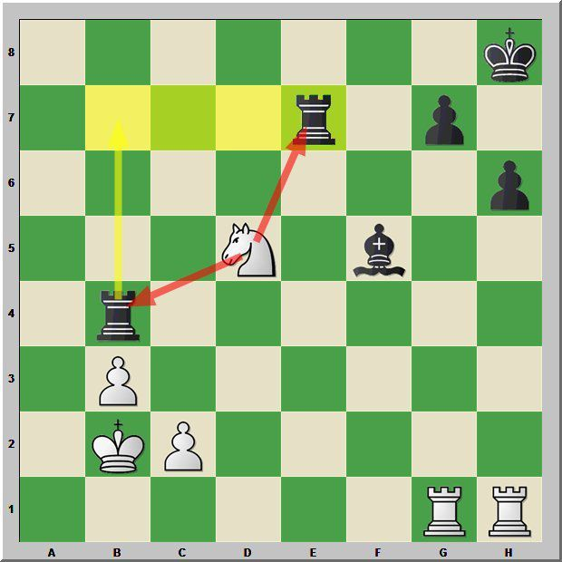
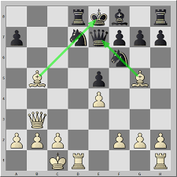
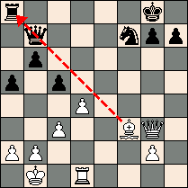
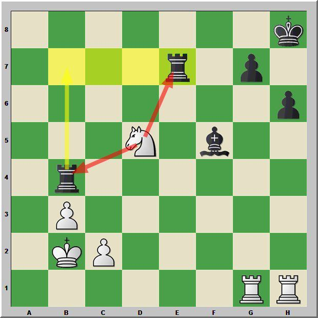
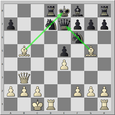
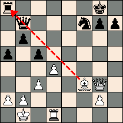

Qu'est ce que le milieu de game?
Exemple de stratégie:
Fourchette,  Clouage,  Enfilade Exemple de stratégie:
Fourchette,  Clouage,  Enfilade Une fois vos pièces mineurs sont sorties et que vous êtes arrivé à une position stable, c'est là que les tactiques et statégies commencent.
C'est le moment où il faut analyser, chercher des failles, tendre des pièges.
Certaines tactiques découlent directement de l'ouverture, et à un moment l'échange de pièce entre en jeu, cela permet de simplifier la position en échangeant du matériel.
Par exemple, un avantage matériel même minime permet souvent le gain, mais seulement en finale. Le camp le plus fort doit donc trouver un moyen de forcer son adversaire à jouer une finale favorable.